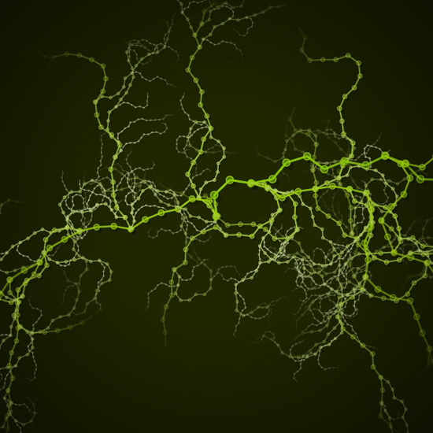
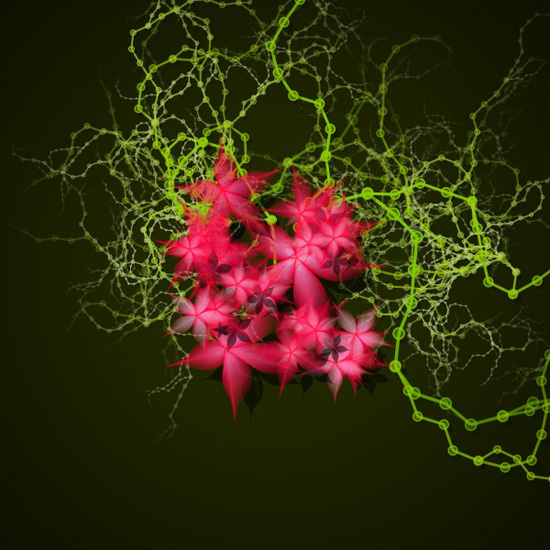
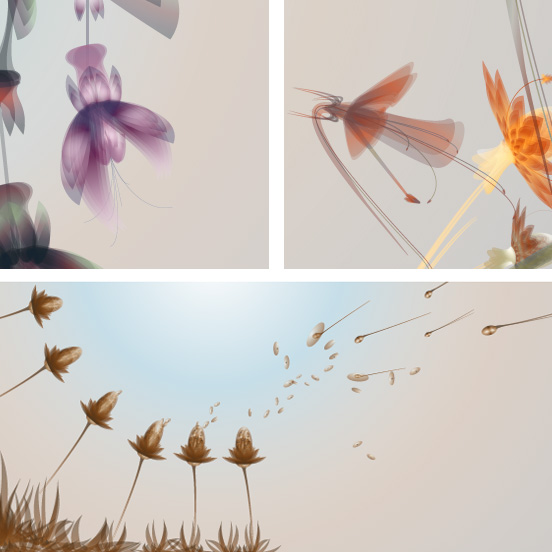
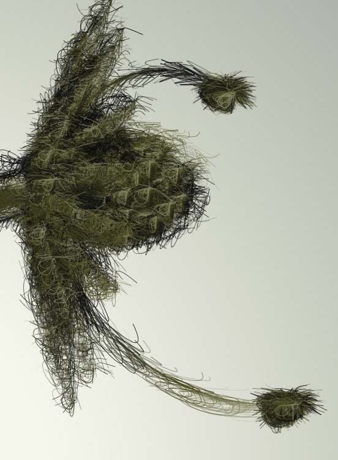
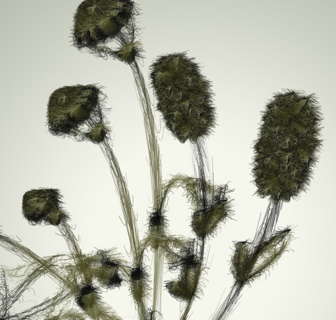
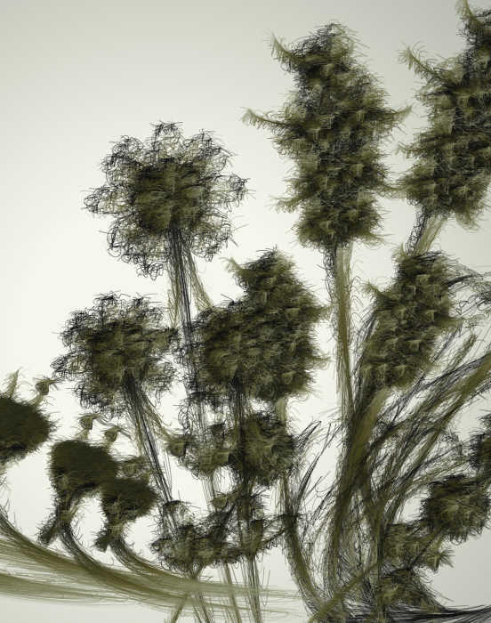

Superfolia
In the aftermath of Evolution I've started building a small ecosystem of evolving plantlife. Here are some first sketches. Many more plants are to follow and the idea is of course to have them evolve and cross-combine. This way, instead of the arena-like environment in which the Evolution creatures fly around, we have an ecosystem of plants for them to eat, hide in, or get eaten by. Plants would have properties similar to the creatures, for example the amount of sunlight they need, if and how they are edible, how they pollinate and which creatures spread their seeds, and so on.
Roots and recursion
This first weedlike plant is based on a simple recursive algorithm. Recursion is a popular technique used to describe trees and the like, because of the self-referential nature of a tree. Basically, you would describe a tree by stating that a branch is something from which smaller branches sprout, and that the root of a tree is a big branch.


Flowers and math
In the next example we add some flowers to the roots. These are based on Johan Gielis' Superformula. With this formula you can describe any shape found in nature in no more than four variables.
This saves a lot of calculating work and is highly interesting because you can cross-combine the parameters of two flowers to generate new flowers, or attach properties to a variable (e.g. spikiness, elegance, ...)

Flower factory
During her design masters Ludivine Lechat graduated with a project called Latifolia. A system of flowers and colors.

Recently I've started experimenting with this fantastic artwork, chopping it up like we did in Evolution, discering petals, leaves, flower buds, spores, individual elements which we can combine randomly into new plant forms. I'm looking for a way to combine Ludivine's art with Johan Gielis' formula.
This ART+COM project is inspiring as well.
SVG and path filters
NodeBox now has an SVG library to import SVG vector data. All of the vector data is transformed to standard NodeBox paths, so it is possible to manipulate each point in the path separately. Here, each path is modified with a furry pathfilter. Part of the code for this algorithm is over at the SVG library page. The original vector art is done by Ludivine Lechat.



Created by Tom De Smedt